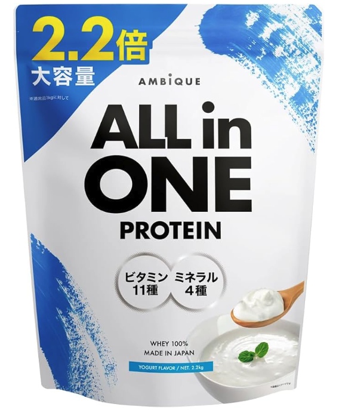

はじめに
体脂肪率15%以下を目指す上で大事なのは、特別な食材や完璧な献立じゃない。
「簡単な型を何度も回せること」。
このプレゼントは、難しい食材や凝ったレシピは使わず、基本は米・肉・魚・卵・野菜で回せる形にしたテンプレ集。
曜日ごとの細かい指定じゃなくて、各タイプごとにそのまま使える3パターンを用意した。回しやすいものを1つ決めて始めてくれ。
参考：国立スポーツ科学センターは減量中のたんぱく質摂取量として体重1kg当たり1.6〜2.4g/日を推奨。NIHは運動習慣のある人で1.2〜2.0g/kg/日を目安としている。
1. まず最初に決めること（メンテナンスカロリー）
最初に決めるべきは体型タイプよりも「自分のメンテナンスカロリー」。メンテナンスカロリー＝今の体重が大きく増えも減りもしない摂取カロリー。
減量を始めるときは、ここから300kcal引いた数値をスタートラインにする。
| 項目 | 考え方 |
|---|---|
| 目標摂取カロリー | メンテナンスカロリー − 300kcal |
| たんぱく質 | 体重×1.6〜2.2g を目安に確保 |
| 脂質 | 総摂取カロリーの20〜30％以内を目安 |
| 炭水化物 | 残りを米中心で確保。筋トレの質が落ちるほど削らない |
例：維持カロリー2,500kcalの人なら、減量スタートは2,200kcal前後。2週間ほど回して、体重が落ちないならさらに下げる、落ちすぎるなら戻す。
2. 必要カロリーの出し方（超簡単）
超簡単な方法＝ChatGPTに聞く。以下の文面をそのまま入れる：
これで維持カロリーのだいたいの値が出る。カロリー計算アプリよりも、年齢・性別・身長・体重・運動頻度をまとめて入力する方が実態に近づけやすい。
InBodyなどの体組成計の結果があれば一緒に入力するとさらに精度UP。
ポイント
- 1kcal単位の正確さは不要。「だいたいこのくらい」の基準があればOK
- 増量＝メンテナンスカロリー＋300kcal / 減量＝−300kcal
- 最初の数字には必ず誤差があるので、体重変化を見ながら都度修正
- 二週間で300〜700gの増減になっていれば大きく外していない
- 体重や運動量が変われば必要カロリーも変わる。一度出したら終わりではない
| 目的 | 最初の設定 |
|---|---|
| 増量 | メンテナンスカロリー ＋300kcal |
| 減量 | メンテナンスカロリー −300kcal |
3. タイプ別の考え方
医学的な分類じゃなくて、食事調整の方向性を分かりやすくするための実務上の分類。同じカロリーでも、食欲・筋肉量・空腹感・代謝感覚によって続けやすい形は変わる。
| タイプ | 特徴 | 食事設計の方向性 |
|---|---|---|
| 痩せ型 | 食が細い、体重が落ちやすい、筋肉も落ちやすい | 米を極端に減らさず、毎食たんぱく質をしっかり入れる |
| 筋肉質型 | 筋肉量がある、比較的バランス良く進めやすい | 高たんぱくを維持しつつ、昼とトレ前後の米を残す |
| がっしり型 | 食欲が強い、脂肪も乗りやすい、食べる量が増えやすい | たんぱく質と野菜を先に満たし、夜の米と脂質を抑える |
4. 痩せ型向け 食事テンプレ3パターン
方針：減量で体重を落とすことよりも、筋肉を落とさずに締めることが優先。米を減らしすぎず、鶏むね肉・卵・魚を軸に毎食たんぱく質を入れる。
| 朝 | 昼 | 夜 | 間食 | |
|---|---|---|---|---|
| A | ごはん200g、卵2個、納豆、みそ汁 | 鶏むね肉150g、ごはん250g、サラダ | 鮭150g、ごはん200g、冷ややっこ、野菜スープ | プロテイン1杯、バナナ1本 |
| B | ごはん200g、焼き鮭1切れ、卵1個、みそ汁 | 好きなたんぱく源150g前後、ごはん250g、キャベツ | 鶏むね肉180g、ごはん200g、ブロッコリー | プロテイン1杯、ゆで卵2個 |
| C | ごはん200g、納豆、卵2個、キムチ | 好きなたんぱく源150g前後、ごはん250g、サラダ | 白身魚150g、ごはん200g、豆腐、みそ汁 | プロテイン1杯、ヨーグルト |
痩せ型のポイント
- 空腹感よりも食事量不足が問題になることが多い
- 米を抜くより、揚げ物やお菓子を抜く方が優先
- 見た目を絞りたいからといって炭水化物を極端に削ると、筋トレの質が落ちて逆に細く見える
5. 筋肉質型向け 食事テンプレ3パターン
方針：もっとも標準的に進めやすいタイプ。米の量を中程度に保ちつつ、高たんぱくを維持。筋トレの強度を保つため、昼とトレーニング前後の炭水化物は残しておく。
| 朝 | 昼 | 夜 | 間食 | |
|---|---|---|---|---|
| A | ごはん200g、卵2個、納豆、みそ汁 | 鶏むね肉180g、ごはん250g、ブロッコリー | 鮭180g、ごはん180g、サラダ、豆腐 | プロテイン1杯 |
| B | ごはん200g、卵2個、焼き魚、みそ汁 | 好きなたんぱく源180g前後、ごはん250g、キャベツ | 鶏むね肉200g、ごはん180g、野菜スープ | プロテイン1杯、ゆで卵2個 |
| C | ごはん200g、納豆、卵2個、キムチ | 好きなたんぱく源180g前後、ごはん250g、サラダ | まぐろ赤身180g、ごはん180g、冷ややっこ、みそ汁 | プロテイン1杯、バナナ1本 |
筋肉質型のポイント
- 外食や飲み会が入っても、次の食事でテンプレに戻せるかが重要
- 崩れた翌日に極端に食事を減らすより、元の型に戻す方が長期で安定する
6. がっしり型向け 食事テンプレ3パターン
方針：食欲コントロールと脂質管理が鍵。米を完全に抜く必要はないが、夜だけ少し抑えめにする。肉と野菜を先に食べる形にすると進めやすい。
揚げ物・マヨネーズ・菓子パン・夜のラーメンは最初から習慣に入れない。
| 朝 | 昼 | 夜 | 間食 | |
|---|---|---|---|---|
| A | ごはん180g、卵2個、納豆、みそ汁 | 鶏むね肉200g、ごはん220g、サラダ | 白身魚180g、ごはん120g、豆腐、野菜スープ | プロテイン1杯 |
| B | ごはん180g、焼き魚、卵1個、みそ汁 | 好きなたんぱく源200g前後、ごはん220g、キャベツ | 鶏むね肉220g、ごはん120g、ブロッコリー | プロテイン1杯、ゆで卵2個 |
| C | ごはん180g、納豆、卵2個、キムチ | 好きなたんぱく源200g前後、ごはん220g、サラダ | まぐろ赤身180g、ごはん120g、冷ややっこ、みそ汁 | プロテイン1杯、ヨーグルト |
がっしり型のポイント
- 夜の満足感が不足すると間食に流れやすい
- 肉・魚・豆腐・汁物・野菜をきちんと入れる
- 米を少し減らすより、脂質の多い余計な一品を削る方が体脂肪は落ちやすい
7. コンビニで食べるなら（自炊しない人向け）
4要素をそろえる：主食 / たんぱく源 / 補助たんぱく / 野菜か汁物
毎回ゼロから考えず「この中から選べばOK」の状態を作る。
主食
| 分類 | アイテム例 |
|---|---|
| ごはん系 | おにぎり、もち麦おにぎり、鮭おにぎり、梅おにぎり、塩むすび |
| 弁当系 | 焼き魚弁当、鶏系弁当、のり弁のごはん活用 |
| その他 | 冷やし焼きいも、カップごはん、雑穀入りごはん |
たんぱく源
| 分類 | アイテム例 |
|---|---|
| 鶏系 | サラダチキン、スモークチキン、鶏むね肉惣菜 |
| 卵系 | ゆで卵、味付け卵 |
| 魚系 | 焼き魚パック、さば塩焼き、鮭ハラス以外の魚惣菜、ツナ水煮 |
| 大豆系 | 豆腐、豆腐バー、納豆、枝豆 |
| 乳製品系 | ギリシャヨーグルト、無糖ヨーグルト、高たんぱくヨーグルト |
| 補助 | プロテインドリンク、プロテインバー |
野菜・汁物
| 分類 | アイテム例 |
|---|---|
| サラダ系 | カットサラダ、海藻サラダ、キャベツサラダ、ブロッコリーサラダ |
| 汁物系 | みそ汁、野菜スープ、わかめスープ |
| 追加しやすいもの | キムチ、めかぶ、もずく、ひじき、カップ惣菜の野菜系 |
間食
| 分類 | アイテム例 |
|---|---|
| たんぱく質中心 | プロテインドリンク、ゆで卵、ギリシャヨーグルト |
| 軽い糖質補給 | バナナ、果物カップ、おにぎり1個 |
| 小腹対策 | 枝豆、豆腐バー、無糖ヨーグルト |
コンビニでの組み方の例
| 1食の組み方 | |
|---|---|
| A | おにぎり2個、サラダチキン、ゆで卵1〜2個、みそ汁 |
| B | おにぎり2個、魚惣菜またはサラダチキン、サラダ、みそ汁 |
| C | おにぎり1〜2個、サラダチキン、豆腐またはゆで卵、サラダ、スープ |
重要なのは完璧な栄養管理ではなく「毎回同じ型で選べること」。
8. 1週間の買い物リスト
特定の肉や魚に固定せず、自分が続けやすいタンパク源を好みで選べる形にする。毎回同じ食材だと飽きるので、鶏むね肉だけに縛らず卵・魚・納豆・豆腐・ヨーグルトなどを組み合わせる。
家に置いておきたい基本食材
| 分類 | 目安 |
|---|---|
| 主食 | 米を1週間分 |
| タンパク源 | 毎食ぶんをまかなえる量 |
| 野菜 | サラダ用、汁物用、温野菜用を数種類 |
| 間食用 | プロテイン、卵、ヨーグルト、バナナなど |
選びやすい食材例
| 分類 | 食材例 |
|---|---|
| 肉類 | 鶏むね肉、鶏もも皮なし、豚ヒレ、豚もも、脂身の少ないひき肉 |
| 魚類 | 鮭、さば、白身魚、まぐろ、ツナ水煮、サバ缶水煮 |
| 卵・大豆類 | 卵、納豆、豆腐、豆腐バー、枝豆 |
| 乳製品 | ギリシャヨーグルト、無糖ヨーグルト、高たんぱくヨーグルト |
| 補助 | プロテイン |
タイプ別のざっくり買い方
| タイプ | 主食 | タンパク源 | 野菜 |
|---|---|---|---|
| 痩せ型 | 米はやや多めに確保 | 毎食しっかり入れる。肉・魚・卵を切らさない | サラダ、みそ汁、ブロッコリーなどを無理なく足す |
| 筋肉質型 | 米は標準量を確保 | 肉、魚、卵、大豆をバランス良く回す | 昼と夜に野菜を足す |
| がっしり型 | 米は食べる分だけ管理しやすく置く | 高たんぱく食材を多めに確保。間食もたんぱく源に寄せる | サラダ、スープ、海藻類を多めに置く |
重要：厳密に「牛ももを何グラム」のように固定しなくていい。毎食たんぱく質を入れられる状態を作ることが大事。好きで続けやすい食材を中心に回した方が長続きする。
9. とりあえず持っておけばいいサプリ
サプリは多くなくて大丈夫。最初はプロテインとクレアチンの2つで十分。

アンビーク プロテイン
| サプリ | 役割 | 使い方 |
|---|---|---|
| ホエイプロテイン | たんぱく質不足を埋める | 1回20〜30gを、食事で足りないときやトレ後に飲む |
| クレアチンモノハイドレート | 筋トレの出力や筋量維持を補助 | 1日3〜5gを毎日飲む |
- プロテインはまずは普通のホエイで十分
- クレアチンは特別な種類を選ぶ必要はなく、クレアチンモノハイドレートでOK
- NIHではクレアチンは短時間高強度運動に有効性あり、一般的な用量として1日3〜5gが広く使われている
10. 迷ったときの優先順位
食事管理が崩れやすい人ほど、最初から細かく考えすぎない方が続く。
- 毎食たんぱく質を入れること
- 米の量を決めること
- 揚げ物とお菓子を減らすこと
- 間食をプロテインか卵に固定すること
体脂肪15%以下を目指す上で大事なのは、特別な食材や完璧な献立じゃなくて「簡単な型を何度も回せること」。
まずは自分のタイプに近い3パターンのうち、回しやすいものを1つ決めて始める。
最後に
食事は、1日3〜5食、毎日続くもの。だからこそ、凝ったレシピよりも「シンプルに回せる型」の方が続く。
このプレゼントのテンプレから1つ選んで、明日の朝から始めてみてくれ。
3ヶ月後、鏡を見た時に違いが出る。
リョータ